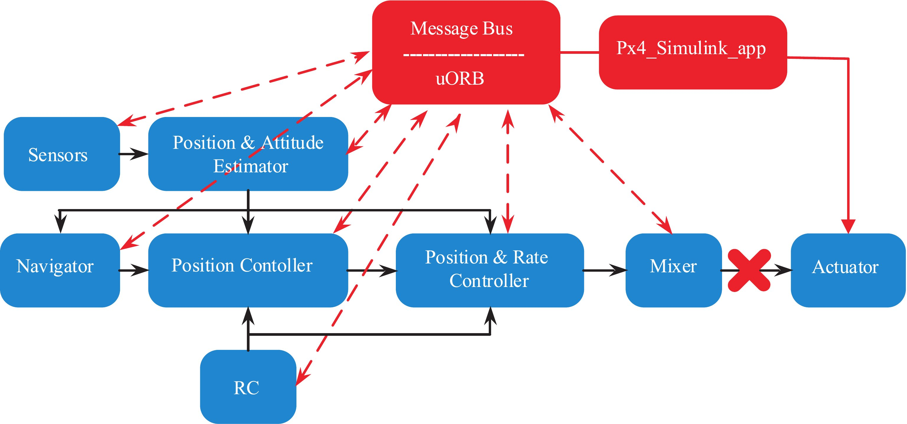
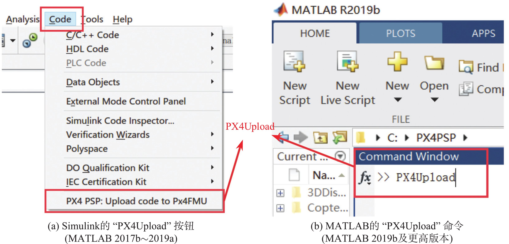

3. PSP工具箱¶
图 3.13 Simulink 与 Pixhawk 自驾仪代码生成关系图
上图展示了 PSP 工具箱、PX4 软件系统与 Pixhawk 硬件系统之间的关系。该工具箱的主要功能包括：
（1）能在 Simulink 中对不同的飞机模型和自驾仪算法进行仿真和测试，并能自动将算法部署到 Pixhawk 自驾仪系统中；（2）PSP 工具箱提供了一些实用实例，包括灯光控制、遥控器数据处理和姿态控制器等；（3）PSP 工具箱中提供了很多接口模块，用于访问 Pixhawk 硬件系统的软/硬件组件；（4)能自动记录传感器、执行机构以及部署进去的控制器的飞行数据；（5)能订阅和发布 uORB 话题消息。PX4 软件系统的所有数据都暂存在一个 uORB消息池中，通过 uORB 订阅功能可以从消息池中读取感兴趣的话题，通过 uORB 模块的发布功能可以将特定的话题发布到消息池中供其他模块使用。
Simulink 生成的代码与 Pixhawk 自驾仪系统的关系总结如下：
（1）Pixhawk 自驾仪系统的软/硬件结构包括：Pixhawk 硬件系统（类似于计算机主机）和 PX4 自驾仪软件系统（类似于主机上运行的操作系统和应用程序）。（2）整个 PX4 自驾仪软件系统可以分为若干个小模块，每个模块独立运行（多线程并行），各个模块通过 uORB 模块的订阅与发布功能实现数据的传输与交互。（3）Simulink 生成的代码部署到 PX4 自驾仪软件系统之后，不会影响原生 PX4 自驾仪软件系统的运行，而是新增一个名为“px4 simulink app"的独立模块（独立线程）并行于其他模块运行。（4）整个代码生成与部署过程如下：
- PSP 工具箱将在 Simulink 中设计的控制算法生成 C 代码；
- 将代码导入到 PX4 自驾仪软件系统的源代码中，生成一个“px4 simulink app"独立运行的程序；
- PSP 工具箱调用编译工具将所有代码编译为“.px4"的 PX4 自驾仪软件固件文件（类似于系统镜像文件）；
- 将得到的固件文件下载到 Pixhawk 自驾仪系统中并烧录，由 Pixhawk 自驾仪系统执行带有生成算法代码的 PX4 软件。
（5）由于原生 PX4 控制算法可能需要访问和“px4_simulink_app"同样的硬件输出资源，这会产生读写冲突。因此，平台一键部署脚本提供了自动屏蔽 PX4 原生固件对执行器的选项，以确保只有“px4_simulink_app"模块能够输出电机控制量。图 3.14 Simulink 与 Pixhawk 自驾仪代码生成关系图
(6)生成的 Simulink 代码也可以用于替换PX4 软件系统的某些原生模块（位置控制器、卡尔曼滤波器、姿态控制器等），但是需要手动修改 PX4 固件代码来屏蔽原始模块的输出接口（另一种可行方法是修改PX4模块启动脚本文件 "FirmwareROMFSpx4fmu_commoninit.drcS"，并注释掉想要屏蔽的模块）。例如，想用 Simulink 实现一个姿态滤波器模块（输入传感器数据，输出状态滤波数据）来替换 PX4 原始的滤波器，需要手动屏蔽 “Position & Attitude Estimator"滤波器模块向 uORB 消息池发布滤波后姿态数据（对应名为vehicle_attitude的uORB消息）的代码。具体操作示例为：① 打开“Firmwaresrcmodulesekf2ekf2 main.cpp"文件（扩展卡尔曼滤波器模块对应代码）；②在其中屏蔽掉"ORB_ID(vehicle_attitude)"消息相关的发送代码。例如，搜索关键字"_att_pub"的代码行，并找到其中含有"publish"和"att"的发送代码行，将其替换为“UNUSED(att);”。③ 在Simulink中编写姿态滤波器，并用"uORB Write"模块发送"vehicle_attitude"消息即可实现姿态滤波器功能的替换。
3.1 Simulink Pixhawk Target Blocks 模块库介绍¶
在安装完成 PSP 工具箱之后，可以在 Simulink 中看到“Pixhawk Target Blocks"模块库，其中提供了一些 Simulink 接口模块来访问Pixhawk 的硬件系统和 PX4 软件系统的内部消息。这些接口模块可以在 Simulink 的模块库“Pixhawk Target Blocks"中查看，它由四个子库组成：“ADC and Serial"（数模转换与串口库）、“Miscellaneous Utility Blocks"（辅助工具库）、“Sensors and Actuators"（传感器和执行器接口库）和“uORB Read and Write"（uORB 消息读写库）。
图 3.15 Simulink Pixhawk Target Blocks 模块库
下图为“Sensors and Actuators"（传感器和执行器接口库）中的几个关键的输入和输出模块。通过这些模块可以方便地获取 Pixhawk 的传感器数据或滤波后的状态数据，并控制电机、LED 灯和蜂鸣器的输出。
图 3.16 PSP 工具箱中传感器和执行器接口库示意图
同时PSP 工具箱还提供了大量的官方例程（详见文件夹“e02.PSPOffi- cialExps"）以及官方使用手册（详见文档“e02.PSPOfficialExpsPixhawk Pilot Support Pack- age.pdf"）。通过上述例程和文档，读者可以快速掌握各个关键模块的使用方式，以及代码生成与下载流程。
图 3.17 PSP 工具箱官方例程及官方使用手册
3.2 工具箱内各个模块的使用说明¶
- （1）遥控输入模块
- 通过这个模块可以选择接收遥控器的通道数量和其他的一些信息。每个选项的含义可单击对话框的“Help"按钮查看或者查阅官方文档。同时 PSP 工具箱还提供了学习这一模块的例子（详见文件“e02.PSPOfficialExpspx4demo input rc.slx")。
图 3.18 遥控器输入模块及其参数设置框
- （2）PWM 输出模块
- PWM 输出模块用于发送 PWM 信号到 PX4IO 的输出端口以控制电机转动，在配置页面中可以选择 PWM 的更新率及输出通道。
图 3.19 PWM 输出模块及其参数设置框
- （3）FMU 输出模块
- FMU 输出模块用于发送 PWM 信号到 PX4FMU 的输出端口以控制舵机的偏转，在配置页面中可以选择 PWM 的更新率及输出通道。
图 3.20 FMU 输出模块及其参数设置框
- （4）蜂鸣器模块
- 通过这个模块可以控制蜂鸣器发出提示音。PSP 工具箱还提供了学习这一模块的例子（详见文档“e02.PSPOfficialExpspx4demo tune.slx")。
图 3.21 蜂鸣器模块及其参数设置框
- （5）RGB LED 模块
- 通过这个模块可以控制 LED 灯闪烁的模式和颜色。该模块接收有两个输入，一个是模式（Mode)，另一个是颜色（Color)。PSP 工具箱还提供了学习这一模块的例子（详见文档“e0PSPOfficialExpspx4demo_rgbled.slx")。
图 3.22 RGB LED 模块及其参数设置框
- （6）传感器数据组合模块
- 通过传感数据组合模块可以获取 Pixhawk 中可用的传感器数据，然后这些数据可以用于 Simulink 控制器的设计。可获取的传感器数据包括磁力计、加速度计、陀螺仪、气压计和时间戳。在模块的设置页面可以配置采样频率和想要输出的传感器信号。PSP 工具箱还提供了学习这一模块的例子（详见文档“e02.PSPOfficialExpspx4demo_attitude_control.slx")。
图 3.23 传感器数据组合模块及其参数设置框
- （7）姿态数据模块
- 姿态数据模块提供了经过滤波的姿态数据（欧拉角和四元数)。PSP工具箱还提供了学习这一模块的例子（详见文档“e02.PSPOfficialExpspx4demo_attitude_control.slx”)。
图 3.24 姿态数据模块及其参数设置框
- （8）GPS 数据模块
- 通过该模块可以获取 Pixhawk 的 GPS 数据，它是通过订阅 uORB 话题“vehicle_gps"实现的。因此，在实际运行时需要 Pixhawk 上插入 GPS模块才能保证正确发布该话题，从而获取正确的 GPS 数据。PSP 工具箱还提供了学习这一模块的例子（详见文档“e02.PSPOfficialExpspx4demo_gps.slx")。
图 3.25 GPS 数据模块及其参数设置框
- （9）电池数据模块
- 通过这个模块可以获取电池的实时数据，它是通过订阅uORB 话题“battery status"实现的，所以在实际运行时需要保证 Pixhawk 上插入电源模块才能获取正确数据。
图 3.26 电池数据模块及其参数设置框
- （10）uORB 模块
- 通过uORB 模块可以从 PX4 自驾仪软件系统中读取或发送 uORB 消息，其中 PX4 自驾仪软件系统支持的所有 uORB 消息类型可以在软件包安装目录（默认路径是“C:PX4PSP")下的“Firmwaremsg"目录中查看。
图 3.27 用于消息读写的 uORB 模块
双击“uORB Write"模块可以打开uORB 消息配置界面，在其中可以选择发送的 uORB 消息名称和数据。
图 3.28 uORB 消息配置界面
单击uORB 消息配置界面中的“Open .msg file"按钮可以打开选定的 uORB消息文件；单击“Open .msg folder"按钮打开消息目录。
图 3.29 uORB 消息文件
下面为两个高级的“uORB Write"模块，提供更为简单的发送 uORB 消息的接口。
图 3.30 uORB 模块参数设置框“Open .msg folder"消息目录
实际上，前面提到的所有模块（如 PWM 输出模块、RGB LED 模块等）在底层均是通过uORB 消息的读写来实现的。理论上，通过 uORB 消息的读写，Simulink 可以获取并发送 PX4 自驾仪软件系统内所有消息和中间变量，来实现更高级的控制器功能。同时，PSP 工具箱还提供了学习这一模块的例子（详见文档“e02.PSPOfficialExpspx4demo_fcn_call_uorb_example.slx"和“e02.PSPOfficialExpspx4demo_write_uorb_example.slx"）。
PX4 自驾仪软件系统的开发者网站提供了 自定义 uORB 消息的教程 ，以及`通过MAVLink 协议与外部设备进行数据交互的教程 <http://dev.px4.io/master/en/middleware/mavlink.html>`_ 。通过以上教程，可以实现从外部设备接收数据，并解码为自定义的 uORB 消息。结合PSP中的uORB 模块，可以实现生成的"px4_simulink_app"与外部硬件的通信。
图 3.31 高级 uORB Write 模块及它们之间的区别
- （11）Pixhawk 内部参数
- 为了方便调参与测试，PSP 工具箱还提供了读取 Pixhawk 内部参数的方法。这样可以在飞行测试实验中，直接通过地面站软件来修改 Simulink 生成控制器的参数，而不需要在 Simulink 中修改参数，再生成代码并重新下载 Pixhawk。访问内部参数的例程展示在 "e02.PSPOfficialExpspx4demo_Parameter_CSC_example.slx"文件中。
图 3.32 PX4 内部参数读取例程
图 3.33 参数初始化脚本设置
访问 Pixhawk 内部参数是通过 Pixhawk CSC.Parameter({*, *}) 函数实现的，需要将该函数放入Simulink菜单栏的"File"-"Model Properties"-"Callbacks"-"InitFcn"中。
3.3 Simulink 配置实现 PSP 工具箱自动代码生成¶
- (1)Simulink 控制器代码生成前准备工作
准备工作的步骤如下：
1)在 Simulink 中设计一个控制器，并进行软件在环仿真验证；2)将验证通过的控制器复制到一个新的 Simulink 文件中；3)将控制器的输入接口和输出接口与 PSP 工具箱模块库中的输入(如传感器模块、遥控器模块等)与输出(如 PWM 输出模块、RGB LED 模块等)接口进行连接；下图是一个完成连线的 Simulink 控制器的例子，该例子可以参考“e02.PSPOfficialExpspx4demo_attitude_system.slx"文件。
图 3.34 完成连线的 Simulink 控制器
- （2）打开 Simulink 设置面板
- 新创建的 Simulink 文件需要经过一定的设置，才能支持 PSP 工具箱的代码生成功能。首先在 Simulink 单击“设置"按钮来打开 Simulink 设置面板。
图 3.35 不同版本 MATLAB 的“设置”按钮
- （3）PSP 工具箱代码生成设置
- 在“Hardware Implementation"标签页的“Hardware board"下拉框中设置硬件板卡为“Pixhawk PX4"。
图 3.36 选择目标硬件标签页
- （4）源代码编译与固件生成
- 单击 “编译"按钮即可进实现 C/C++ 代码的生成和 PX4 固件的编译。也可以单击 Simulink 的“诊断"按钮来查看代码的生成与编译过程。
图 3.37 不同版本 MATLAB 的“编译”按钮
图 3.38 不同版本 MATLAB 的”诊断”按钮
一次成功的编译过程在“Diagnostic Viewer"窗口中的状态下图(a) 所示，可以看到编译进度条完成，同时显示“Successfully generated all binary outputs"消息。此外，在编译完成之后，Simulink 会自动弹出如下图(b) 所示的“Code Generation Report"代码生成文档。
图 3.39 代码生成与固件编译进度显示窗口
- （5）下载 PX4 固件到 Pixhawk 硬件
- 利用 PSP 工具箱提供的一键下载功能实现固件的下载与烧录，具体步骤如：1) 用 USB 数据线连接Pixhawk 自驾仪侧面 USB 口和计算机上的 USB 。2）对于 MATLAB 2017b∼2019a 版本，单击 Simulink 的菜单栏的“Code"标签，在弹出的下拉菜单中单击“PX4 PSP:Upload code to Px4FMU"即可；对于 MATLAB 2019b 及更高版本，由于 Simulink 菜单栏被取消，读者可以在 MATLAB 的“命令行窗口"输入“PX4Upload"命令来下载固件。
图 3.40 不同 MATLAB 版本的固件下载功能
3）认真查看弹出窗口提示，有时需要重新插拔 Pixhawk 自驾仪才能开始下载流程。
经过上述步骤，读者已经实现将自己编写的自驾仪代码烧录到 Pixhawk 自驾仪系统中。